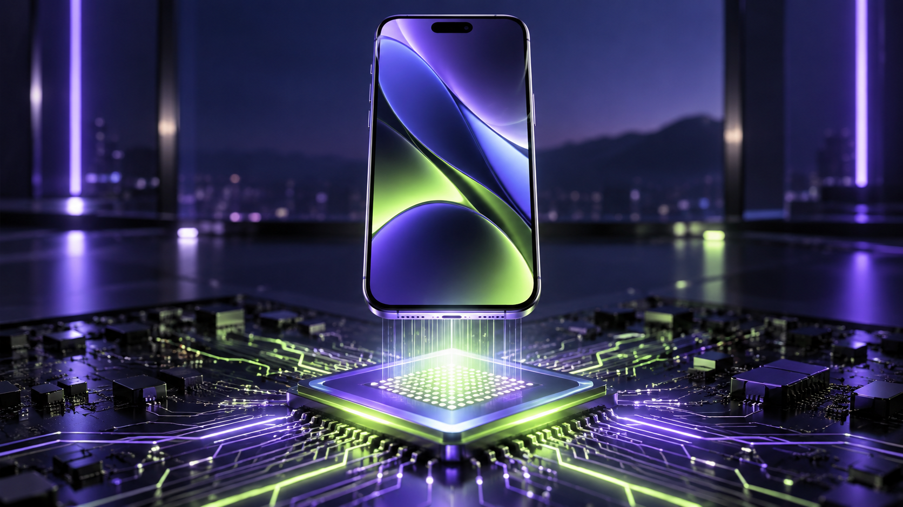

A20 Pro 2nm: apa maksudnya untuk pengguna iPhone

Istilah 2nm, GPU dan Neural Engine sering kedengaran seperti bahan pemasaran. Nilai sebenar cip baharu terletak pada apa yang dapat dilakukan oleh telefon setiap hari.
Prestasi dan kecekapan
Apple mendakwa A20 Pro menawarkan peningkatan prestasi sehingga 20% dan grafik sehingga 40% berbanding generasi sebelumnya. Angka pembuat ialah petunjuk awal; ujian bebas masih penting untuk melihat kesan pada aplikasi sebenar.
Kenapa AI disebut sekali
Cip itu juga dikatakan mempunyai GPU dengan neural accelerator dan Neural Engine yang lebih berkuasa. Secara praktikal, ini boleh menyokong ciri AI pada peranti dengan lebih pantas tanpa setiap tugasan perlu dihantar ke pelayan.
Jangan beli hanya kerana proses 2nm
Untuk kebanyakan pengguna, bateri, kamera, sokongan perisian dan harga masih lebih penting. Cip baharu paling berbaloi apabila ia menyelesaikan masalah penggunaan anda, bukan kerana namanya lebih kecil.